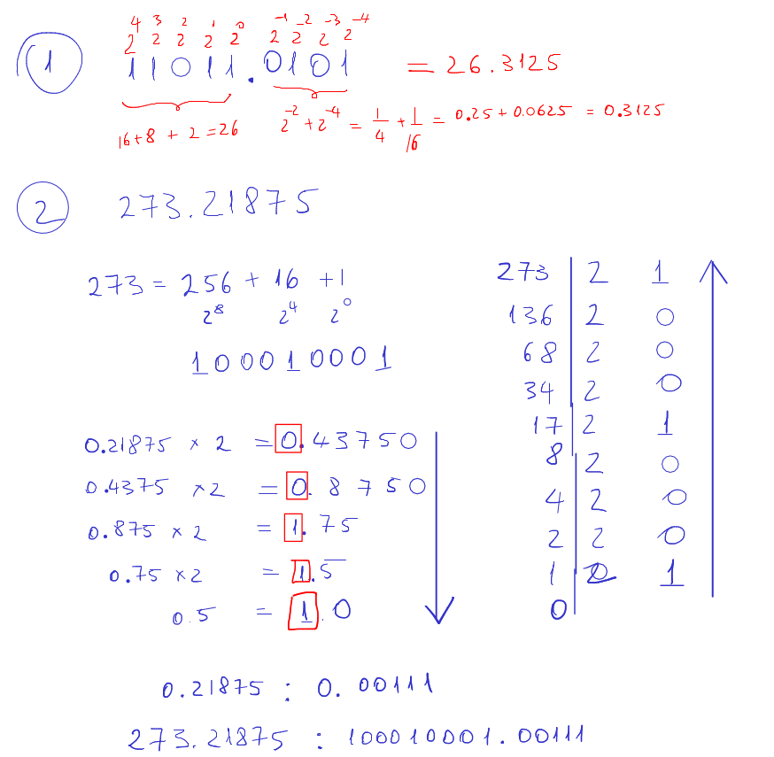

Efectele cuantizării în filtrarea digitală
Laborator 11, PSS
1 Obiectiv
Studiul efectelor produse de cuantizarea semnalelor în cadrul unui filtru digital.
2 Noțiuni teoretice
Reprezentarea numerelor fracționare în baza 2

TBD
3 Exerciții teoretice
Fie sistemul cu ecuația cu diferențe următoare:
\[y[n] = \frac{1}{2}y[n-1] + x[n]\]
Calculați primele 6 eșantioane ale răspunsului la semnalul de intrare \(x[n] = \left(\frac{1}{4}\right)^n u[n]\), în trei moduri:
- Calcule în precizie infinită
- Calcule în formatul virgulă fixă 1S0Î4F, cuantizare prin trunchiere
- Calcule în formatul virgulă fixă 1S0Î4F, cuantizare prin rotunjire
4 Exerciții practice
În Matlab, creați un fișier tip script pentru a studia cuantizarea semnalului
mtlbpe \(N=8\) biți.- Încărcați semnalul audio predefinit
mtlb(cuload mtlb); - Deduceți dacă aveți nevoie de bit de semn sau nu;
- Aflați valoarea absolută maximă a semnalului și deduceți numărul de biți necesar pentru partea întreagă, respectiv câți biți mai rămân disponibili pentru partea fracționară;
- Utilizați funcția
fixdt()pentru a crea tipul de date corespunzător - Utilizați funcția
num2fixpt()pentru a converti semnalulmtlbla formatul virgulă fixă ales, prin toate cele 3 metode de cuantizare - Pentru toate cele 3 metode de cuantizare, vizualizați semnalul cuantizat, eroarea de cuantizare, și calculați energia totală a erorii de cuantizare. Care metodă de cuantizare produce erorile minime?
- Redați semnalul cuantizat. Se poate sesiza diferența?
- Încărcați semnalul audio predefinit
În Matlab, realizați o funcție pentru a implementa sistemul din exercițiul 1. Valorile se vor cuantiza după fiecare operație de înmulțire / adunare. Aplicați la intrarea sistemului semnalul cuantizat de la exercițiul 2.
5 Întrebări finale
- TBD